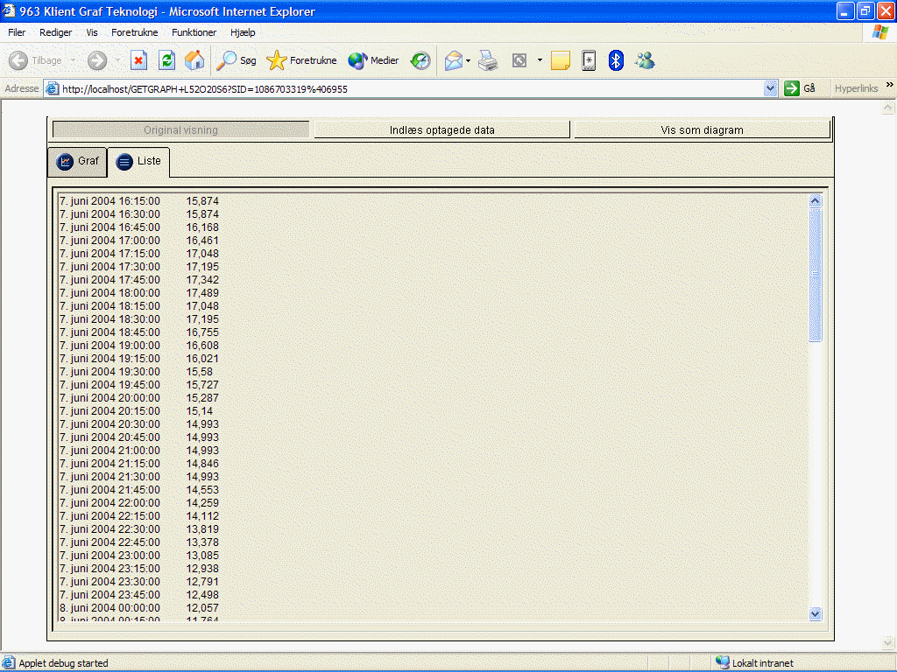

Data for grafen kan vises som en punkliste.
Sådan vises grafen som en punktliste:
1 Vis enten en kompakt graf eller en præcisionsgraf for den værdi, der skal vises, som beskrevet i det pågældende kapitel i denne vejledning.
2 Klik på ‘Liste’. Den nedenfor viste dialogboks fremkommer.

3 Hvis der er mere end én kurve på grafen, vil en liste over kurver fremkomme øverst i vinduet. Klik på den kurve, hvis data skal bruges.
Bemærk: Denne funktion er kun tilgængelig, hvis man bruger Microsoft Internet Explorer version 4.02 eller senere eller Netscape version 6.1 eller senere.